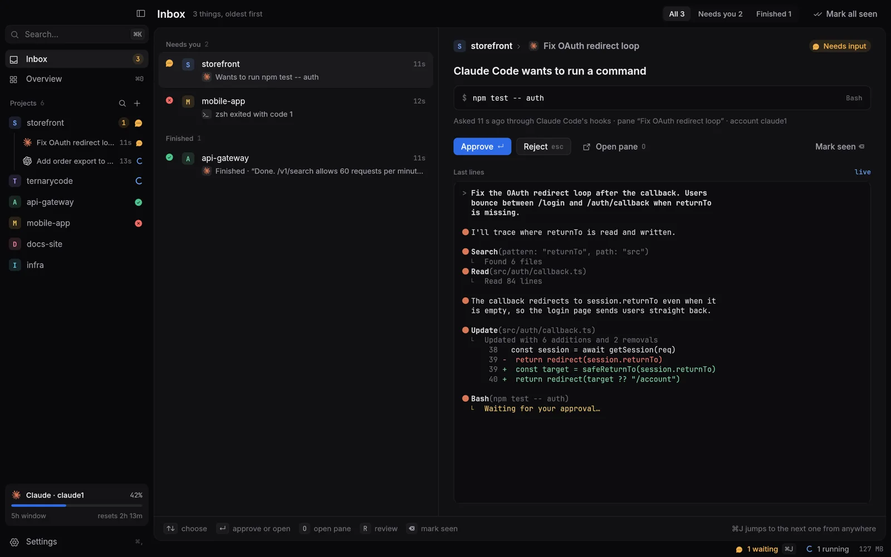
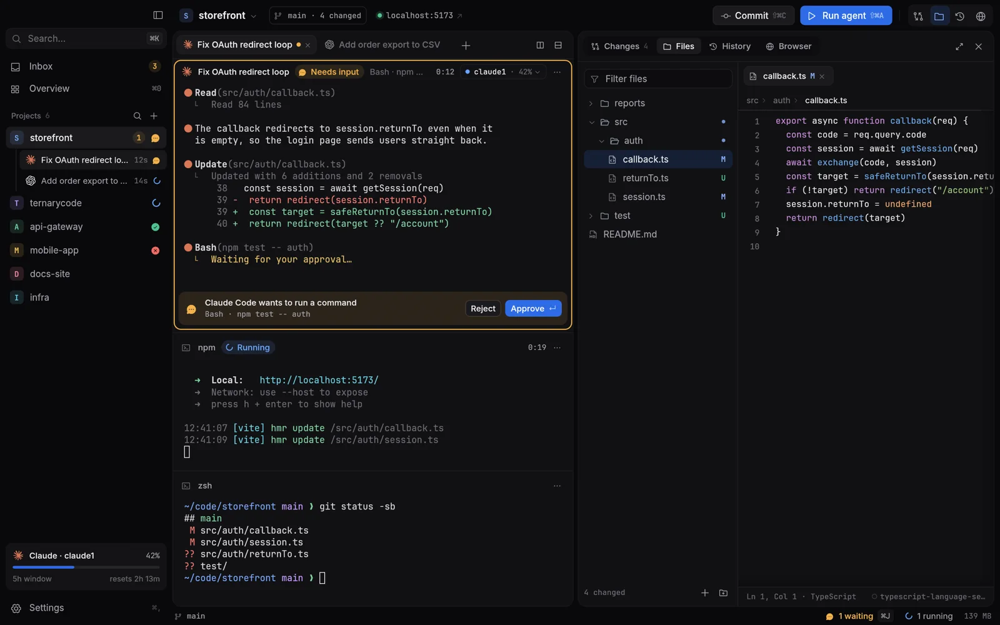
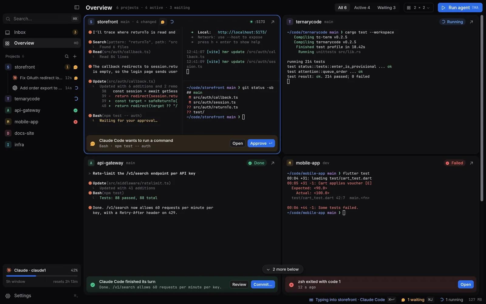
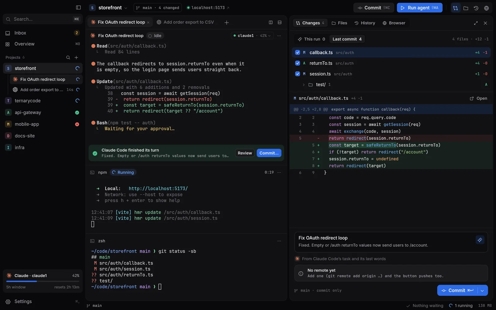
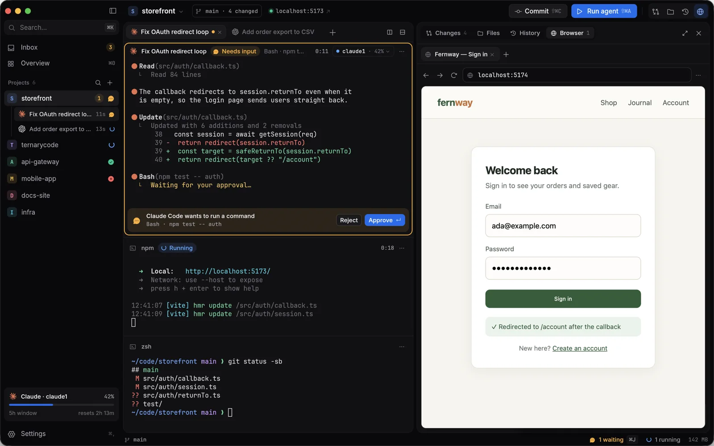
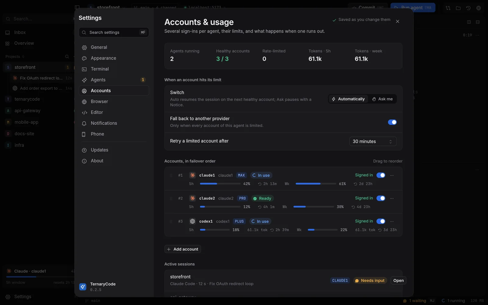
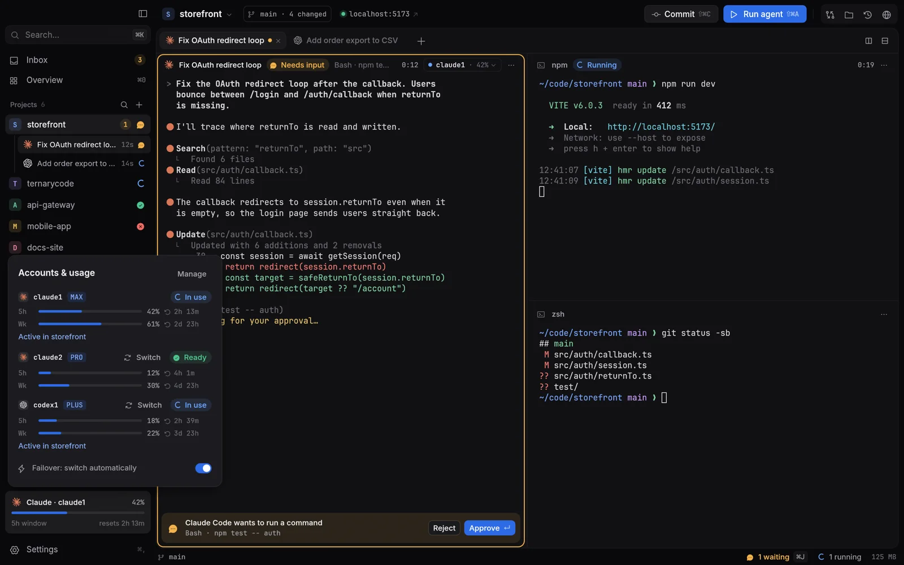
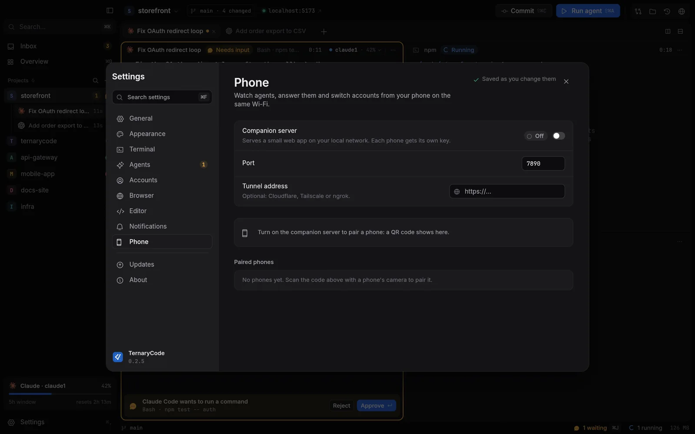
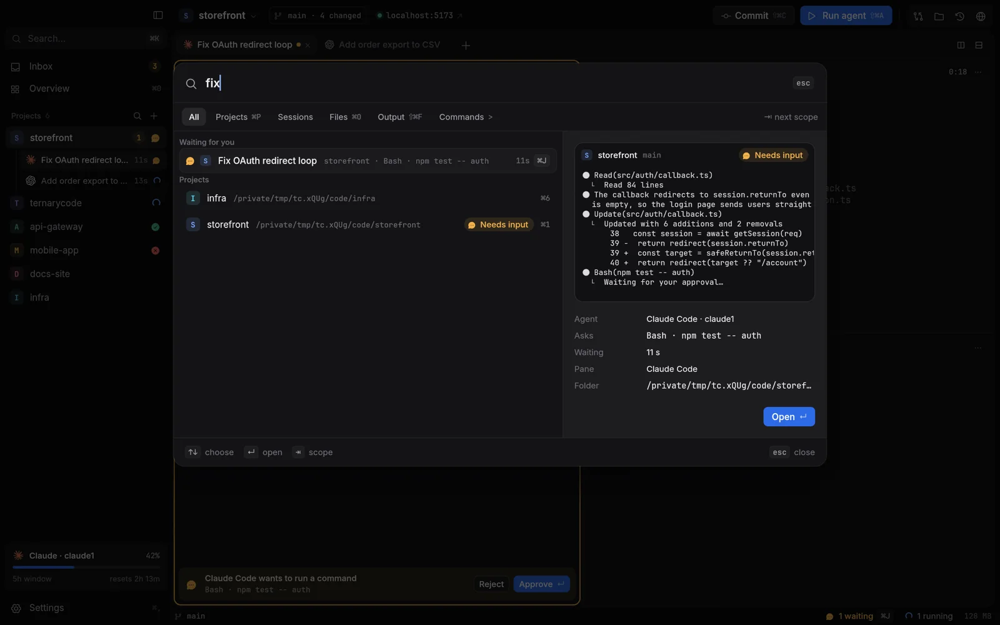
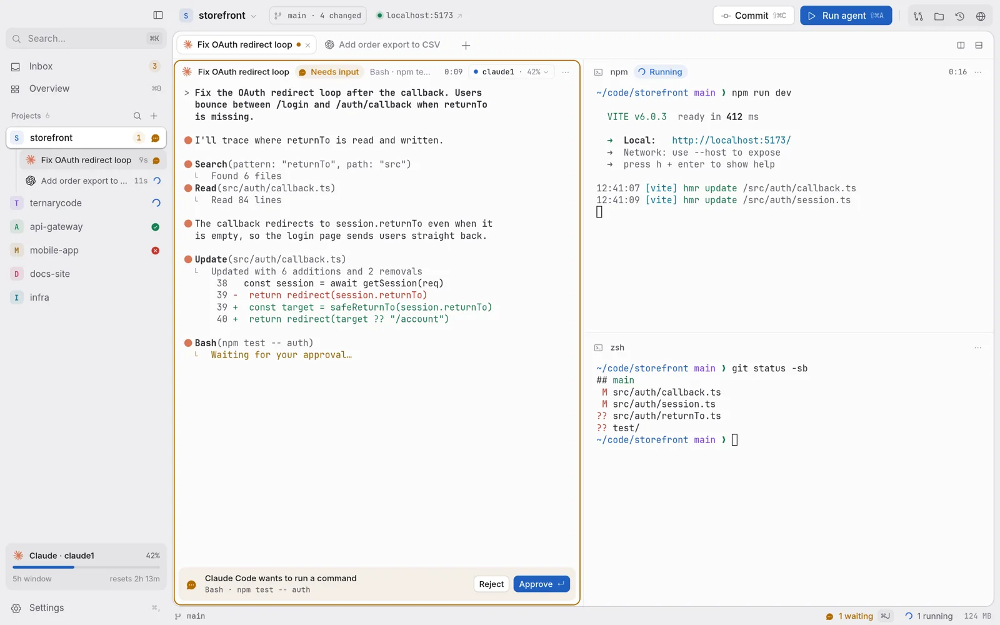

Which agent
needs you now?
One native window for all your projects and the coding agents working in them. When Claude Code, Codex or OpenCode waits for you, it lands in your Inbox, and ⌘J takes you there.

Native. Not a browser
in a costume.
No Electron and no web page behind the window. TernaryCode is one small app that opens before you’ve looked away, and does nothing at all when nothing changes.
Measured on an Apple M1 Pro with a release build. Your shells and agents use their own memory on top.
Status you can trust, not a guess.
Each agent tells TernaryCode what it’s doing through its own hooks. When one stops for you, its pane gets an amber ring and a Notice at its foot: Approve with ↵, or Reject, right where it asked. The sidebar, the Inbox and the status bar count it.
- One Notice for every banner: an agent’s question, a usage limit, a session to resume, a shell that ended.
- Hooks are added per launch for Claude Code and Codex. Nothing in your config changes. Notifications and the Dock badge only when you’re not looking.
Wants permission or an answer. The pane rings amber and the Inbox lists it, the oldest first.
PermissionRequest · NotificationWorking on its own. The pane header says what it’s doing, for how long, and on which account.
UserPromptSubmit · PreToolUseFinished its turn. It says how many files it changed, with Review and Commit one click away.
Stop · agent-turn-completeAn error, or a command that exited badly. Without a reliable signal it says Active, never a guess.
StopFailure · exit statusEverything that waits, in one list.
The Inbox at the top of the sidebar collects what needs you in every project: permission requests, questions, failures and finished turns, oldest first. Read the agent’s question and the last lines of its terminal, then Approve with ↵, or open the pane.
- ⌘J jumps to the next one from anywhere; ⇧⌘J takes you back to where you were.
- Finished turns wait in a group of their own until you’ve seen them.

Terminals are the stage. Code is one panel away.
Your agents work in terminals, so the terminals get the window: tabs and splits per project, and a header on every pane with the agent, its status, what it’s doing, a timer and the account. Beside them, one panel holds Changes, Files, History and the Browser. ⇧⌘L shows or hides it; ⇧⌘E lets it fill the window.
- The selected project opens its sessions and worktrees under it in the sidebar. An earlier Claude Code, Codex or Antigravity CLI session resumes in one click.
- Files reads code with your language servers: rust-analyzer, gopls, TypeScript, pyright, clangd… ⌥⌘Z (Zen) hides everything but the terminals.

Every project, live, side by side.
The Overview shows every project at once, each tile a real terminal you can type into, not a picture of one. An agent that asks, one that finished, a test run that failed: you see all of them without opening anything.
- Projects stay in the order you choose. ⌥⌘↑ moves one, ⌘1–9 opens one, and the numbers never shift.
- Tabs and splits come back at the next start. Shells start when you look at them, so twenty projects open as fast as one.

Review it, commit it, or ship in one button.
Changes shows what this run touched, the whole branch, or the last commit, as a diff beside the agent that wrote it. The commit message is written from the agent’s task; Commit ⇧⌘C commits, pushes and opens the pull request.
- Start an agent in a git worktree of its own, so two agents never write over the same files. It shows under its project in the sidebar.
- History lists commits and pull requests; the project bar shows the open pull request and whether its checks pass.

A browser your agents can drive.
An agent opens your dev server in the panel beside its terminal, clicks through it, types, reads the page and the console, and answers dialogs, with real input events. You watch it work, and click into the page to take over any time.
- The system’s own web view: WebKit, WebView2, WebKitGTK. Sign-in pop-ups, downloads, find, zoom and the inspector all work.
- Each agent gets a page of its own. A dev server a pane starts shows up as a chip in the project bar. Agents never type your passwords.

Several accounts per agent. No logout dance.
Add your Claude Code and Codex accounts in Settings › Accounts, each with its own isolated login, and drag them into the order you want them used. The meter at the foot of the sidebar shows the account in use; click it for every account’s real 5-hour and weekly limits, with their reset times.
- When an account hits its limit, the pane’s Notice offers Resume on the next one, or failover does it for you and resumes the same conversation.
- When every account of an agent is limited, another provider can take over from a handoff summary that leaves secrets out.


Answer your agents from your phone.
Turn on Settings › Phone and scan the QR code. Your phone follows every agent over the same Wi-Fi, or through your own Cloudflare, Tailscale or ngrok tunnel: live output, Approve and Reject, follow-ups and account switches.
- Every phone gets its own key; revoke it from the same page any time.

The report your agent wrote, right there.
PDF, Word, PowerPoint, Excel, CSV and images open in the panel, read in Rust off the UI thread. A CSV opens as a table, with find and zoom, beside the agent that wrote it.

One box finds anything. Day or night.
The command palette searches everything: projects, sessions (live and ones to resume), files, the output of every pane, and every command with its shortcut, so you learn them as you go. ⇥ moves between the scopes.
TernaryCode follows your system’s appearance, terminals included, with a dark and a light scheme made for long sessions.


Built by someone who lives in it.
Updates don’t stop your agents
On macOS, an update installs while you work and TernaryCode restarts in place. The programs in your panes keep running.
Pick up the conversation
After a restart, agents that can continue a conversation offer Resume in a Notice, in the pane where they were.
Dev servers become chips
A local server a pane starts shows up in the project bar, beside the pull request and its checks. One click opens it in the Browser panel.
A real terminal
24-bit colour, mouse, IME, ⌘-click links, find that counts its matches in every pane, shell integration for zsh, bash, fish and PowerShell.
Zen, when you only want the terminals
The sidebar, the panel and the bars step aside. The same keys bring them back, where they were.
One app, three systems
On Windows it draws its own title bar with menus and runs PowerShell 7. On Linux the Browser panel uses WebKitGTK.
Your hands stay on the keys.
The command palette, ⌘K, lists all of them.
Yours, on your machine.
No account
Download it and use it. There is no sign-in, no plan and no trial. Your agents keep their own logins, as they do in any terminal.
No telemetry
TernaryCode connects to one place: GitHub, to check for updates, and you can turn that off. Pushes, commit history and pull or merge requests go through your own git, GitHub CLI (gh) and GitLab CLI (glab). Hooks and browser tools talk to the app over a local socket, with a token per pane.
Open source
MIT licensed, built in the open with egui, alacritty_terminal and wry. Read it, build it, change it.
Two minutes from here.
TernaryCode updates itself after that. Then install the agents you use (claude, codex, opencode, agy); Run Agent shows how when one is missing.
Run this in Terminal recommended
It checks the download’s SHA-256 and signature, then installs into /Applications. macOS 12 or later, Apple Silicon and Intel.
curl -fsSL https://raw.githubusercontent.com/ilhamnadhif/ternarycode/main/scripts/install.sh | bashOr download the disk image
Download the installer
Windows 10 (1809) or later, x64.
If PowerShell says “running scripts is disabled”
Set-ExecutionPolicy -Scope CurrentUser RemoteSignedRun it once, or install PowerShell 7 with winget install Microsoft.PowerShell.
What it needs
OpenGL (a software renderer is fine) and glibc 2.28 or later. The Browser panel needs WebKitGTK 4.1 (libwebkit2gtk-4.1-0); without it, pages open in your default browser. A blank window? LIBGL_ALWAYS_SOFTWARE=1 ternarycode.
Is it really free?
Yes. TernaryCode is MIT licensed, with no account, no paid tier and no telemetry. You pay only for the agents you already use, through their own plans.
Which agents does it work with?
Run agent (⇧⌘A) has presets for Claude Code, ChatGPT / Codex, Antigravity CLI (agy) and OpenCode, and you can add any command as a preset of your own. Each agent is installed on its own, as usual.
The selected project lists its Claude Code, Codex and Antigravity CLI sessions under it in the sidebar, and the command palette finds older ones to resume.
Will it change my agent’s settings?
Not unless you ask. Hooks are passed for each launch, and each account you add lives in a private 0o700 folder so your default CLI login is untouched. If you want agents you start by hand to report too, Settings › Agents installs hooks once with an exact preview and full Uninstall.
How does switching accounts work?
Add each account once in Settings › Accounts (for example claude1, claude2, codex1) and sign in inside its own folder; drag them into the order they should be used. When one hits its 5-hour or weekly limit, the pane’s Notice offers Resume on the next account, or failover does it for you. The conversation goes on where it stopped, and nobody logs out.
Where did Profiles and Phone Pairing go?
Into Settings, with everything else: Profiles is now Settings › Accounts, and Phone Pairing is Settings › Phone. The usage meter at the foot of the sidebar opens Accounts & usage with every account’s meters.
Does my code go anywhere?
Not through TernaryCode. It sends nothing about you or your code; it only asks GitHub whether there’s an update. When you push or open a pull request, your own git and GitHub or GitLab CLI send it where you asked. The phone companion serves your own network, or the tunnel you set. Your agents talk to their own providers, exactly as they do in any terminal.
Why does my system warn me about it?
The builds aren’t notarized or code-signed yet. On macOS, the one-line installer checks the download’s SHA-256 and signature itself; with the .dmg, use Open Anyway in Privacy & Security. On Windows, SmartScreen asks once.